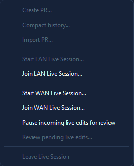

🤝 Collaboration
MidiEditor AI ships four collaboration modes, all server-less, all opt-in: share a snapshot via a smart-paste token, post your work to a Discord channel, co-edit live on the local network, or co-edit live across the internet over WebRTC. Pick a mode based on whether you need realtime, who your audience is, and how chatty you want the editor to be on the wire.

First time here?
If you just want to try it: open a MIDI file, hit Edit → Settings → Collaboration, set a display name, then Collab → Start LAN Live Session…. The other person clicks Join LAN Live Session… and types the 4-character code. That's the entire setup.
Pick your mode
Async PR
Bundle your changes into a single token, send it through any channel
(chat, email, file drop), recipient pastes Ctrl+V into the editor and reviews
each hunk before merging.
Discord
In the Create-PR dialog, click Post to Discord to send a smart-paste token plus a summary embed to a Discord channel. The token is the same one as the Async PR mode.
LAN Live
UDP multicast peer discovery, direct TCP for the data. The host's file auto-transfers to the joiner. Edits flow both ways about once a second.
WAN Live
WebRTC + DTLS over a Cloudflare-Worker rendezvous. NAT traversal via STUN. Same 4-character code, same live-edit pipeline as LAN.
Session features
The four modes above describe how peers connect. The two features below modify what happens inside a live (LAN or WAN) session - they are orthogonal to the transport choice.
Show Mode
One peer at a time holds the hat - editing rights. Every other peer follows along: viewport, zoom, track / channel visibility, active tool, edit cursor, and the presenter's selected notes all mirror onto every viewer's screen. Pass the hat with a request-and-approve handshake; host can reclaim it from a silent presenter.
Chat
A small text chat panel that appears in the lower sidebar whenever a Live Session is active. Talk to your peers without needing a separate Discord / voice channel open. Plain UTF-8 text, in-memory only (no persistence), 4 KB cap per message, unread badge + tab blink for incoming messages.
Mode comparison
All four modes share the same diff engine and apply pipeline. They differ in how the bytes get from one machine to the other and what kind of latency / setup that implies.
| Feature | Async PR | Discord | LAN Live | WAN Live |
|---|---|---|---|---|
| Realtime? | No - manual review | No - manual review | Yes (~1 s) | Yes (~1 s + WAN RTT) |
| Internet required? | No - works offline | Yes - Discord API | No | Yes - rendezvous + STUN |
| Encryption on the wire | n/a (file payload only) | HTTPS to Discord | Plain TCP on LAN | DTLS end-to-end |
| Third-party server in path | None | Discord | None | Cloudflare (handshake only) |
| Multi-peer (3+) | Yes (re-share the token) | Yes (channel members) | Yes (host-star topology) | Yes - up to 8 peers per session |
| Setup time | ~5 s (paste token) | ~2 min (webhook URL) | ~10 s (discovery) | ~30 s (code share + handshake) |
| Reviewer can cherry-pick? | Yes | Yes (same review dialog) | Review-mode toggle | Review-mode toggle |
Common concepts
Every mode shares these building blocks - learn them once, recognise them across the UI.
👤 Identity
A display name (you pick it) plus a machine UUID (auto-generated, stays on this PC). No accounts, no passwords, no key exchange.
📒 Sidecar (.collab)
A small JSON file next to your .mid that records who changed what, when. Acts
as your local commit log. Optional - only created once you opt in to collab on a file.
🔗 Smart-paste token
Compact text that encodes a full PR bundle (zlib + base64-url). Starts with
midiedit-pr://v1: so MidiEditor recognises it on Ctrl+V.
🔑 Session ID
A per-file random ID stored inside the sidecar. Used by Live mode to figure out whether your local copy and the host's copy are tracking the same logical file.
🔁 Auto-init
The first time you create a PR, import a token, or start a Live Session, MidiEditor adds the sidecar and a session ID for you. Nothing happens until you opt in.
🛡️ Work-on-copy
When hosting a Live Session, MidiEditor saves a <name>_shared.mid in
Documents/MidiEditor_AI/shared and edits that. Your original stays untouched.
On by default.
🗂️ One document per session
A Live Session shares a single document. While one is running, the tabs and editor groups are locked to that document - the other tabs stay put and reopen for editing the moment the session ends. You can still keep several files open in tabs before you start.
📜 History tab
The Collaboration History tab shows every commit on the current file (local + remote). Each row expands to show the per-hunk diff that produced it.
🔐 DTLS / WebRTC
WAN Live uses a self-signed DTLS certificate per session, fingerprinted in the SDP. Once the handshake completes, MIDI traffic flows peer-to-peer - the rendezvous server never sees your edits.
Privacy & data flow
🔎 What leaves your machine, and when
Collab is opt-in across the board. With every feature off (default), nothing collab-related ever touches the network.
- Async PR & Discord: nothing until you act in the Create-PR dialog. Copy token puts a token on your clipboard; Post to Discord sends one HTTPS POST to your configured Discord webhook URL. Posting is a deliberate click each time, never automatic.
- LAN Live: while hosting / joined, UDP multicast announces your machine on the local broadcast group. The MIDI bytes themselves stay between the two PCs over plain TCP.
- WAN Live: three small HTTPS calls to the rendezvous Worker (offer / get / answer), then a STUN exchange (your public IP becomes visible to the peer), then DTLS direct. The Worker never sees the MIDI traffic.
- Telemetry: none. The editor doesn't phone home for anything except the optional auto-updater - same as without collab enabled.
First-time gotcha: Windows firewall
⚠️ If "Connection Test" fails on first run
Most likely cause on Windows: Windows Defender Firewall (or your antivirus) silently blocks the app's outbound HTTPS without showing the usual "allow this app to access network" prompt. The rendezvous URL works in your browser, but the in-app Connection Test times out with no specific error.
One-time fix:
- Windows Security → Firewall & network protection → Allow an app through firewall
- Add
MidiEditorAI.exe, check both Private + Public - If you have third-party AV (Bitdefender / Norton / Kaspersky / McAfee / ESET), add an exception there as well
The Connection Test now detects this signature and shows a specific hint inline. Full details on the WAN troubleshooting page.
Where to next?
Show Mode 🎩
Hat-passing presentation sessions, follow-the-host viewport / selection, viewer locks.
Read →In-session Chat 💬
Lightweight text chat panel for the lower sidebar. Works in LAN, WAN, Edit, and Show.
Read →Self-host Cloudflare
Deploy your own rendezvous Worker in five minutes. Cost: free tier.
Walkthrough →Settings reference
Every toggle on the Collaboration tab, what it does, and when to flip it.
Reference →